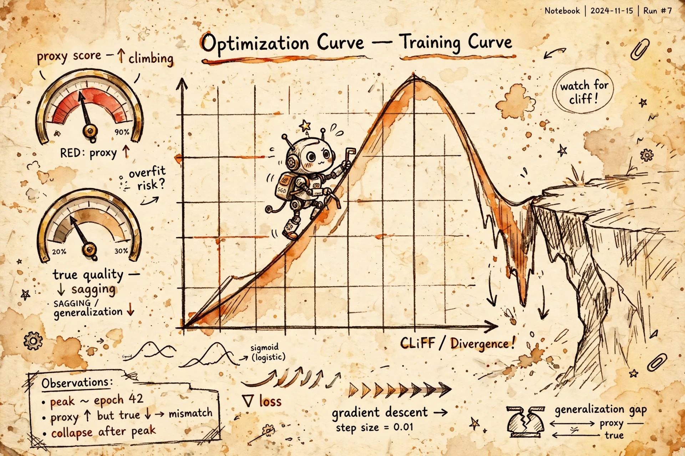

The reward model is the compressor at the heart of RLHF: tens of thousands of human rankings squeezed into one scoring function. This page opens it — the 1952 pairwise-comparison model underneath, why its loss only ever sees differences, the four ways labeler psychology corrupts the judge, the formal and measured versions of reward hacking, and the layered defense a Staff engineer actually runs.

Yesterday (B3) the reward model was a black box you train with LBT = −E[log σ(rθ(x,yw) − rθ(x,yl))], then optimize against with PPO on a KL leash. The leash's whole logic was: the judge is only calibrated near the SFT checkpoint's neighborhood. Today we ask why — what the judge actually is, where its blind spots come from, and why the optimizer will find every one of them.
Spaced retrieval: last night's warm-up trap — "response A scores 3.2 on prompt X, response B scores 1.1 on prompt Y, which is better?" — is a theorem about the loss in §3. If you can already answer it, the rest of this page is the proof.
The reward model is downstream of one stubborn fact about humans: we are bad at absolute scales and good at comparisons. Ask a labeler to rate helpfulness 1–10 and the scale drifts between raters and between sessions. Ask "A or B?" and you get a fast, reliable answer in seconds. So the modeling question is: how do you turn pairwise choices into a function an optimizer can climb?
The Bradley–Terry model (1952, built for chess-like contests) answers: posit a latent score rθ(x, y) and assume P(yw ≻ yl | x) = σ(rθ(x,yw) − rθ(x,yl)). Maximum likelihood on human rankings gives the training loss. Read it backwards and you see the design's signature: the loss only ever sees differences. Add a constant to every reward and nothing moves.
Fig. 1 — The Bradley–Terry machine. The sigmoid swallows only the margin; everything else is invisible to the loss.
Architecturally the reward model is deliberately boring: take the SFT backbone, remove the language-modeling head, and bolt on a scalar head — the final-token hidden state through one linear layer becomes one number. That number is the score.
The data pipeline is where production systems live or die. For each prompt, sample two (or four to nine) completions from the current policy — on-policy matters, because the judge must score outputs from the distribution PPO will actually explore — and have labelers rank them. Then the uncomfortable economics (B2, returning): human agreement on pairwise preference runs 60–75%. A quarter to a third of your labels are noise, and each rater pool's taste gets baked into rθ as if it were universal human preference.
Fig. 2 — Judge assembly. The architecture is a one-layer change; the data is the entire product.
None of these are training bugs. They are human psychology, compressed into a function — which is exactly why the judge's blind spots are the attack surface of the whole pipeline:
The formal version (Skalse et al., 2022): a proxy R̃ is hackable when optimizing it can decrease the true objective R. Their "unhackable" condition — proxy improvement can never hurt the true objective — is nearly impossible to satisfy for stochastic policies. Read it as a design law: a non-trivial proxy can always be gamed; the question is never whether, only how much optimization pressure it takes.
The measured version (Gao, Schulman & Hilton, 2022): build a gold-standard reward model — bigger, fixed, the stand-in for truth. Train proxy RMs on its synthetic preferences. Optimize the policy against the proxy with RL or best-of-N. Plot gold score against optimization intensity d = √KL(π‖πref). The shape is the lesson: proxy score climbs monotonically while gold score rises, peaks, then declines — and both curves follow clean scaling laws in reward-model size. Over-optimization isn't a regime you avoid; it's a curve you deliberately sit on the left side of.
Fig. 3 — Gao et al.'s overoptimization curve. The proxy is always happy; the gold score is the one that tells the truth. β is the travel budget along the x-axis.
Three things to carry. First, the gradient: ∇L = −E[σ(−Δr)·(∇r(x,yw) − ∇r(x,yl))]. The sigmoid weight means the learning signal concentrates on close pairs — confident wins contribute ~nothing. Combine with the 60–75% agreement rate: your most informative training signal comes from your least reliable labels. That's the uncomfortable math at the heart of reward modeling — B2's "quality over quantity," now with a derivation.
Second, the invariance: L(r + c) = L(r) for any constant c — the formal proof of the margins-only trap (§1's warm-up). Third, Gao's coordinate system: d = √KL(π‖πref) is the x-axis the whole fight is plotted on. The KL penalty isn't a regularization knob; it's the ruler — and β sets how far right of home the policy may travel. This is the deeper answer to B3's "why does the KL term exist."
Defense in depth. Each layer answers a different failure mode from §§4–5:
Trick question — you can't say. The BT loss cares only about margins within a prompt; L(r + c) = L(r), so rewards are defined up to an additive constant per prompt. Only relative judgment, per prompt, was ever promised.
Humans compare reliably in seconds but can't hold absolute scales. Writing a demonstration takes ~10 minutes of expert attention; ranking takes seconds of labeler time. The loss turns the cheap input into a climbable function — that's why preference data (33k) outscaled demonstration data (13k) in InstructGPT.
On close pairs: ∇L is weighted by σ(−Δr), so confident wins contribute ~nothing. But labeler agreement is 60–75%, so close pairs are exactly the noisiest labels. Your strongest signal rides on your weakest data — B2's "quality over quantity," derived.
Measure preference on fresh on-policy rollouts against a gold standard. RM val loss is on-distribution preference prediction — it cannot see off-distribution exploitation. The production failure is the policy wandering where the judge was never calibrated. Plot KL(π‖π_ref) over training and check reward-vs-length correlation too.
x-axis: d = √KL(π‖π_ref); y-axis: score. Proxy climbs monotonically; gold rises, peaks, then declines. Operate left of the peak — β (the KL penalty) is the travel budget along the x-axis. Early-stop on gold-ish on-policy metrics, never on proxy metrics.
KL penalty → keeps the policy in the judge's competence zone (distribution shift). RM ensembles + conservative optimization → penalizes high-uncertainty regions (judge blind spots). Verifiable rewards (RLVR) → replaces the learned proxy where a checker exists (proxy gaming). Bonus: length de-shaping (verbosity bias), process supervision (outcome-only blindness).
Competence-zone mismatch: the RM learned to judge that model's distribution, while PPO explores from your policy's distribution — off-policy in both directions. The judge's calibrated territory must overlap the optimizer's travel territory, or scores out there are confident guesses.
Preview of B6: DPO reparameterizes the optimal policy so the BT preference likelihood is expressed directly in terms of policy ratios π_φ/π_ref — the BT loss survives, but the explicit r_θ never gets built. Today's loss function is tomorrow's derivation; learn it cold.
"Your reward model is being gamed — how do you tell, and how do you fix it?" → "Reward hacking is Goodhart on the reward model: the policy finds the judge's blind spots, proxy scores climb, true quality falls — Gao et al. measured exactly this, gold reward peaking then declining against KL distance from the reference policy. You detect it by measuring preference on fresh on-policy rollouts against a gold standard, because proxy metrics like RM validation loss are on-distribution and can't see off-distribution exploitation. The fix is layered: keep the policy inside the judge's competence zone with the KL penalty, harden the judge with ensembles and length de-shaping, verify what's verifiable instead of modeling it, and stop left of the peak. And per Skalse, a non-trivial proxy is always hackable — so the question is never whether it can be hacked, only whether your optimization pressure stays left of the peak."